地政学
フランス、ベルギー、ドイツに挟まれた大公国の首都で、EU司法、会計、投資金融の機能が集まります。小国の主権は軍事力より制度、仲介、多言語行政で示され、国境の近さが日常の前提です。欧州の調整役でもあります。
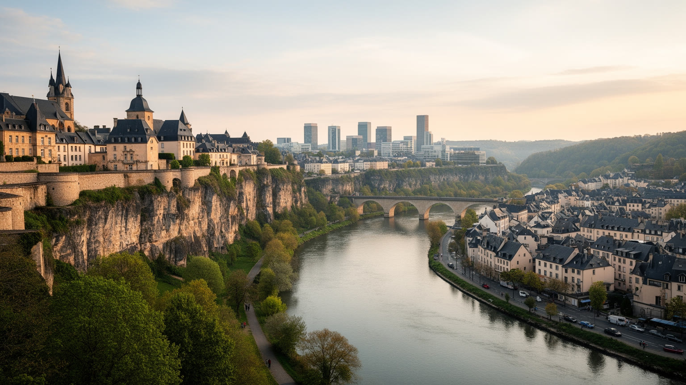
🇱🇺 ルクセンブルク / ヨーロッパ / World City Atlas
深い渓谷に守られた要塞都市は、EU機関、投資金融、三言語の行政、越境通勤、世界遺産の旧市街を小さな首都の中に重ねている。
都市の骨格
ルクセンブルク市はアルゼット川とペトリュス川が刻む谷の上に旧市街を載せ、キルヒベルク台地に欧州機関と金融の高層街を広げる。小国の首都でありながら、働く人の流れは国境を越えて広がる。
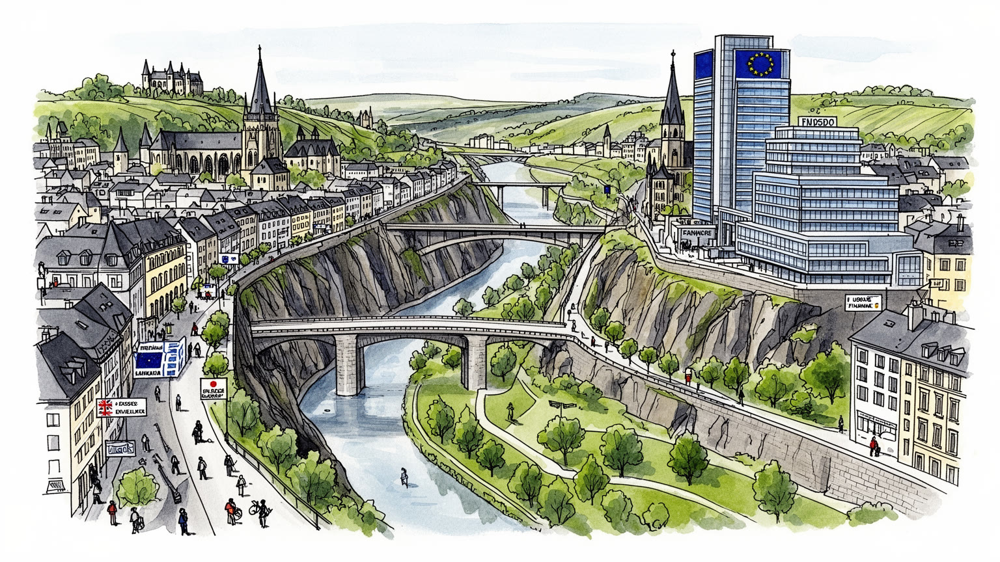
フランス、ベルギー、ドイツに挟まれた大公国の首都で、EU司法、会計、投資金融の機能が集まります。小国の主権は軍事力より制度、仲介、多言語行政で示され、国境の近さが日常の前提です。欧州の調整役でもあります。
銀行、投資ファンド、保険、EU機関、ICT、公共行政が雇用を作ります。市内の職場は国内人口だけでは足りず、フランス、ベルギー、ドイツからの越境通勤者が毎朝集まる労働都市です。家賃も高い。通勤時間も街の課題。
ルクセンブルク語、フランス語、ドイツ語に英語と移民の言語が重なり、カトリックの暦、欧州官僚の生活、国際学校、劇場、美術館、カフェ文化が共存します。小都市でも文化の密度は高い。多声性が日常を作る街。
旧市街、ボックの砲台、グルントの谷、橋、博物館は徒歩で近い一方、住宅価格、通勤混雑、保育、生活費は住民の重い課題です。無料公共交通と緑の谷が日常の救いにもなります。歩けば読める街です。坂道も記憶を運ぶ。
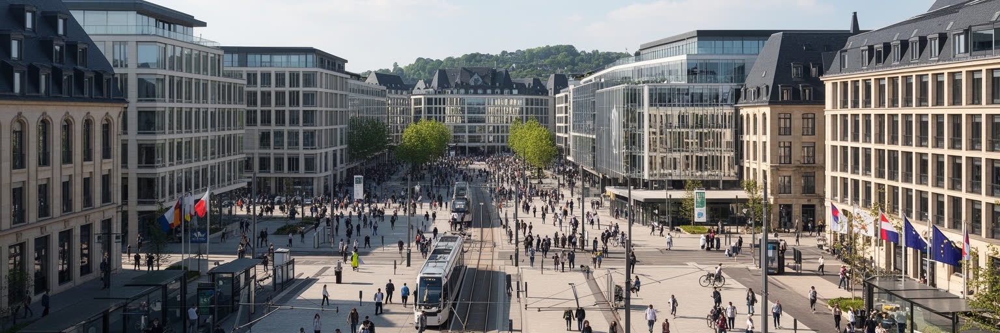
ルクセンブルク市は、ブリュッセルやストラスブールと並ぶ欧州制度の重要な拠点である。キルヒベルク台地には欧州連合司法裁判所、欧州会計検査院、欧州投資銀行、欧州安定メカニズム、欧州委員会の部局、会議施設が集まり、法、監査、金融支援、統計、行政の仕事が日々進む。これは観光客が旧市街で感じる中世の雰囲気とは別の、現代ヨーロッパの制度的な顔である。小国の首都にこうした機能が置かれた背景には、第二次世界大戦後の和解、石炭鉄鋼共同体の記憶、中立的な調整役としての国の位置がある。職員、通訳、法律家、銀行員、警備、清掃、飲食、交通の働き手が台地へ通い、欧州の政策が会議室だけでなく市内の住宅、学校、通勤にも影響する。ルクセンブルク市の国際性は、旗や建物の象徴だけではない。多国籍の家庭が住み、子どもが国際学校に通い、昼食の会話に複数の言語が混ざる生活の実感として現れる。欧州の中心でありながら、都市の規模は歩けるほど小さい。その近さが制度の重さと日常の距離を縮めている。大国の首都のように圧倒するのではなく、歩道、トラム、官庁食堂、住宅街の中に欧州が染み込むことが、この街の特徴である。制度の安定は地域の誇りであり、同時に住宅や交通への圧力でもある。小さな台地の働きが、欧州全体の信頼にもつながる。日々の実務が要です。
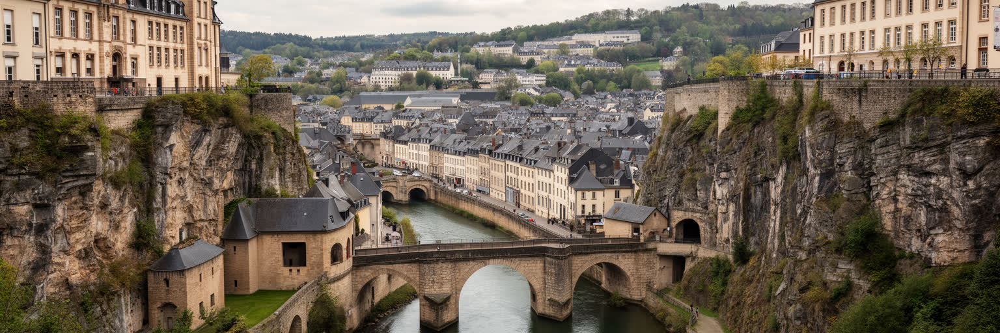
ルクセンブルク市の魅力は、旧市街の美しさだけでなく、地形が都市をどのように守り、分け、結んできたかにある。アルゼット川とペトリュス川は高台を深く削り、崖、橋、坂道、トンネル、谷底の地区を作った。ボックの岩山や地下要塞、城壁跡、砲台は、かつてこの都市がヨーロッパの軍事地図で重い意味を持っていたことを示す。フランス、スペイン、オーストリア、プロイセンなどの勢力が関わり、都市は「北のジブラルタル」と呼ばれるほどの要塞となった。現在の来訪者は橋から緑の谷を眺め、グルントやクラウゼンへ下り、また高台へ上がることで、地形の層を身体で知る。軍事都市の壁は多くが取り払われたが、その痕跡は道路の曲がり方、眺望、街区の段差として残る。世界遺産の価値は、石造りの建物だけにあるのではない。要塞が都市の形を作り、谷が公共空間や緑地になり、橋が分断を越えて近代都市を結んだ歴史にある。小さな首都を歩くほど、短い距離の上下移動が政治と防衛の記憶を連れてくる。谷底の静けさと高台の官庁街は数分で行き来できるが、視界の切り替わりは大きい。地形を読むことは、軍事の都市が生活と観光の都市へ変わった過程を読むことでもある。橋を渡るたびに、守るための崖が人をつなぐ眺望へ変わったことが分かる。地形そのものが都市史の解説になる。今も。
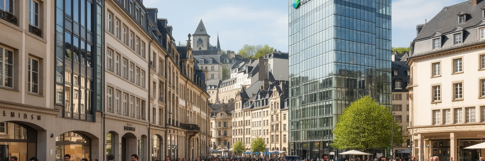
ルクセンブルク市の経済を支える大きな柱は金融である。銀行、投資ファンド、保険、資産管理、法律、会計、監査、信託、金融ITが集まり、国の人口規模をはるかに超える国際資金を扱う。大公国は税制、規制、欧州単一市場への接続、多言語の専門人材を使い、投資ファンドの拠点として存在感を高めてきた。金融の成功は高賃金の専門職、公共財政、国際的な評判をもたらす一方、透明性、租税回避への批判、マネーロンダリング対策、規制の信頼性を常に問われる。市内の金融街は静かで整って見えるが、その背後には世界の年金、企業、個人資産、証券市場がつながる。高い所得水準は住宅価格と生活費を押し上げ、金融で働く人とサービス現場で働く人の距離を広げる。都市を読むには、数字上の豊かさだけでなく、誰がその豊かさにアクセスでき、誰が高い家賃を負担するのかを見る必要がある。ルクセンブルク市の金融は、単なるビジネス街ではなく、小国が制度設計で世界経済に入り込む方法であり、その利点と責任を同じ場所に抱える都市機能である。金融部門が大きいほど、世界市場の変動や規制変更も市内の雇用に響く。安定した小都市に見えても、職場のリスクは外の資本市場と直結している。だから監督機関、専門教育、倫理的な実務も都市の基盤である。信頼こそ最大のインフラになる。
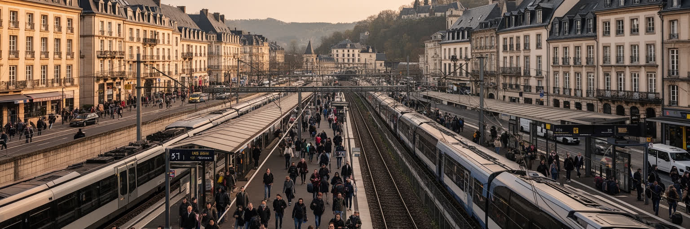
ルクセンブルク市の日常は、国境を越える労働によって成り立つ。フランス、ベルギー、ドイツの近隣地域から多くの人が鉄道、バス、自動車で通勤し、銀行、EU機関、病院、学校、飲食、建設、清掃、物流、家庭サービスで働く。国の人口は小さいが、職場の需要は大きく、首都は周辺三国の労働市場と一体化している。朝夕の渋滞、鉄道の混雑、駐車場、在宅勤務、給与水準の差は、国境が地図の線ではなく生活時間を左右する条件であることを示す。越境通勤者は高い賃金を得る一方、税、社会保障、医療、保育、交通費、家族との時間を別々の制度の間で調整する。ルクセンブルク市の豊かさは、国内住民だけでなく、周辺地域から来る働き手の毎日の移動に支えられる。だから交通政策や住宅政策は一国だけでは完結しない。駅前の整備、国際列車、国境を越えるバス、リモートワークのルールは、都市圏全体の公平さに関わる。小さな首都は実際には広い労働圏を持ち、その見えにくい広がりを理解しなければ、ルクセンブルク市の規模も問題も正確には読めない。働く場所と眠る場所が別の国にある人びとは、都市の繁栄を支えながら政治参加の場から離れがちである。その距離も、越境都市の重要な論点になる。国境を越える日課は、欧州統合を最も具体的に体験する生活でもある。朝の列車がその結び目を運ぶ。
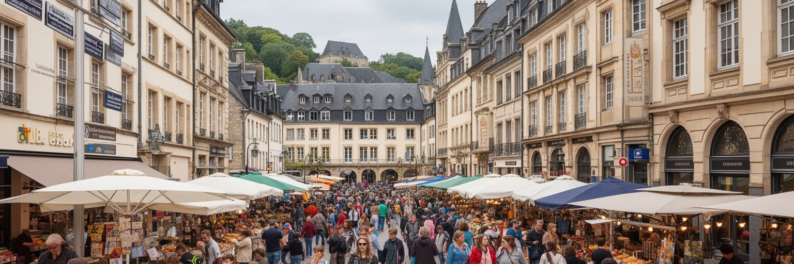
ルクセンブルク市では、言語が日常の地図になる。ルクセンブルク語は国民的な結びつきを支え、フランス語は行政、商業、飲食、街路の会話で強く使われ、ドイツ語は新聞や教育、法制度の一部に残る。そこに英語、ポルトガル語、イタリア語、バルカンやアフリカ、アジアの言語が重なり、学校、カフェ、病院、役所、職場では状況に応じて言語が切り替わる。多言語性は都市の開放性を示すが、誰にでも同じように楽な条件ではない。行政文書を理解できるか、子どもが学校で複数言語についていけるか、職場で昇進に必要な言語を持つかによって、社会参加の道は変わる。移民が多い都市では、言葉は歓迎の道具にも、見えない壁にもなる。宗教生活も多層的で、カトリックの教会、プロテスタント、正教、イスラム、ユダヤ教、世俗的な市民活動が小さな都市の中で共存する。文化は国旗の色だけでなく、家庭で話す言葉、パン屋で使う言語、学校の宿題、休日の礼拝に宿る。ルクセンブルク市を歩くと、国民国家の首都でありながら、住民の帰属が一つに収まらないことが分かる。その複数性が都市の力であり、同時に包摂の課題でもある。公共サービスが多言語で届くほど、住民は都市へ参加しやすくなる。反対に言語の階段が高いままなら、豊かな都市の中に静かな孤立が生まれる。会話の切り替えが、街の柔軟さを示す。
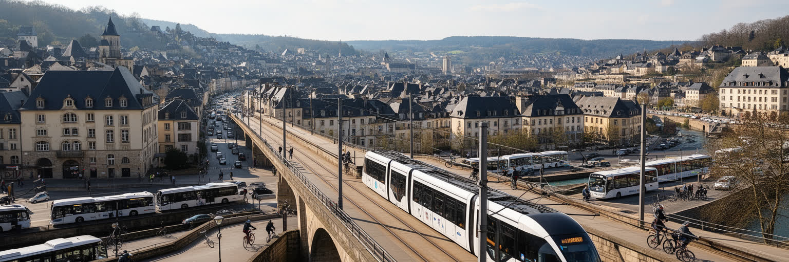
ルクセンブルクは全国で公共交通を無料化したことで知られ、首都の移動にもその政策が深く関わる。市内ではバス、トラム、鉄道駅、歩行者空間、駐輪、パークアンドライドが、谷と台地に分かれた都市を結んでいる。キルヒベルクの欧州機関や金融街へ向かうトラムは、車依存を減らす象徴的なインフラであり、空港、中央駅、住宅地をつなぐ都市の背骨になりつつある。ただし無料であることだけで、移動の問題が消えるわけではない。国境を越える通勤者の増加、道路渋滞、郊外住宅、駅までの距離、夜間の本数、バリアフリー、雨や寒さの中での乗り換えは、日々の負担として残る。旧市街は歩きやすいが、坂と谷が多く、高齢者や子ども連れには距離以上の負荷がある。交通政策は環境対策であると同時に、住宅の場所、働き方、公共空間の使い方を変える社会政策でもある。ルクセンブルク市では、短い都市距離と広い通勤圏が矛盾して同居する。トラムの線路、橋、駅、谷底の道を読むと、豊かな小国の首都もまた、時間と移動の公平さに悩む普通の生活都市であることが見えてくる。無料化は料金の壁を取り払うが、便数、速度、乗り継ぎ、歩道の質までは自動的に解決しない。移動の自由は、運賃ゼロの先にある設計で決まる。坂の多い街では、駅から最後の数百メートルの快適さも重要である。日常の差が出る。
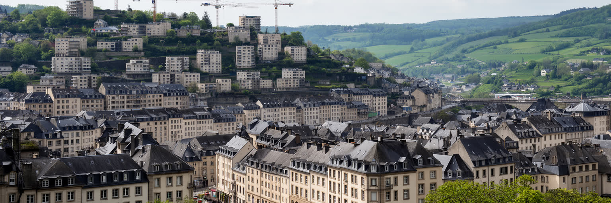
ルクセンブルク市の豊かさは、住宅問題としても現れる。金融、EU機関、国際企業が高い給与を生む一方、土地は限られ、景観保護や谷の地形も開発を制約するため、家賃と住宅価格は上がりやすい。若い世帯、単身者、サービス業の働き手、移民、越境通勤者は、市内に住むことが難しくなり、郊外や隣国から通う選択を迫られる。高い所得水準の国であっても、住まいの負担が重ければ生活の安定は揺らぐ。保育園、学校、スーパー、医療、職場へ近い場所に住める人と、長い通勤に時間を奪われる人の差は、都市の機会を分ける。旧市街や谷沿いの美しい景観は都市の魅力だが、保存と生活の両立には慎重な政策が必要である。住宅供給を増やすだけでなく、公共住宅、混合所得の街区、交通との連動、空き家対策、建築の質を考えなければ、都市は裕福な専門職と短期滞在者の場所に偏る。ルクセンブルク市の格差は極端な貧困の風景として見えにくいが、家を借りる、子どもを育てる、近くで働くという基本的な選択に深く入り込む。美しい首都を持続させるには、誰がその美しさの中で暮らせるのかを問う必要がある。住宅の不足は家計だけでなく、病院、保育、飲食、清掃など都市を支える職種の採用にも響く。住めない都市は、働く都市としても持続しにくい。家賃は都市の包容力を測る数字でもある。
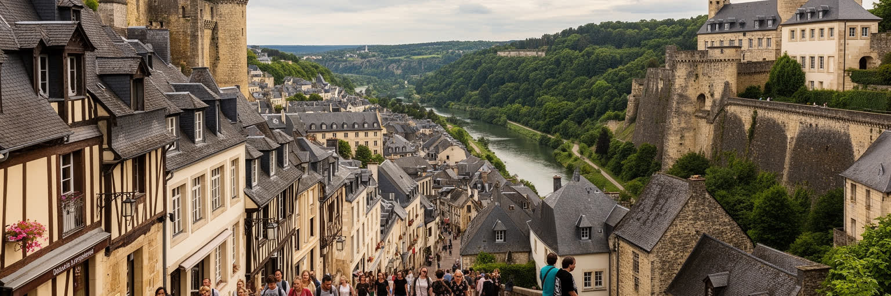
ルクセンブルク市の観光は、巨大な娯楽施設よりも、徒歩で歴史の層を読む旅に向いている。旧市街、ボックの砲台、地下要塞、ノートルダム大聖堂、大公宮、憲法広場、グルントの谷、現代美術館、国立歴史美術博物館は、短い距離の中で中世、近世要塞、近代国家、欧州統合をつなぐ。橋の上から見る谷の緑、石造りの家並み、坂道、広場のカフェは、首都でありながら小さな街を歩く親密さを持つ。観光客は日帰りでも主要な景観を回れるが、滞在を長くすると朝の通勤、昼の官庁街、夕方のカフェ、週末の市場が見えてくる。観光化は旧市街の保存費を支える一方、住民の生活、店舗構成、家賃にも影響する。世界遺産は過去を飾るだけではなく、現在の都市がどの記憶を大切にし、どの場所を住民に開いておくかを問う枠組みである。ルクセンブルク市の旅では、要塞の強さと小国の柔軟さ、石の街並みと国際金融、静かな谷と欧州機関を同じ散歩で結べる。そこに、この都市の読みやすさと奥行きがある。写真の背景としてだけでなく、地形と制度の関係として歩くと、旧市街はずっと立体的に見える。観光の静けさは、市民が日常の道として同じ坂や橋を使うことで保たれている。生活が残るからこそ、遺産は展示物だけにならない。土産物よりも、歩く時間がこの街の記憶を伝える。谷の音も旅の手がかりになる。
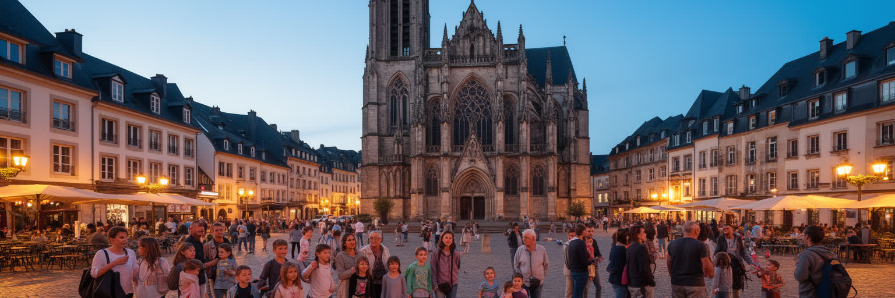
ルクセンブルク市の文化生活には、カトリックの歴史と多文化化した市民社会が同時にある。ノートルダム大聖堂や巡礼行事、国の祝日、王室関連の儀礼は、伝統的な大公国の記憶を支える。一方で、住民の多くは外国籍または移民背景を持ち、ポルトガル系、フランス系、イタリア系、バルカン、アフリカ、アジアのコミュニティが食、音楽、宗教、学校、スポーツを通じて都市を作る。信仰は教会だけでなく、モスク、正教会、シナゴーグ、世俗的な文化団体、慈善活動の形でも現れる。小さな首都では、劇場、映画祭、音楽、現代美術、図書館、大学、カフェの議論が近い距離で混ざり、欧州官僚と地元住民、越境通勤者、学生が同じ公共空間を使う。伝統は都市を一つにまとめる力を持つが、誰がその伝統に含まれ、誰が外側に感じるのかという問いもある。多文化都市としての成熟は、祭りを開くだけでなく、言語支援、教育、差別への対応、宗教的な配慮を日常制度に組み込めるかで決まる。ルクセンブルク市の文化は、古い大公国の格式と移動する住民の生活が折り重なる場所であり、その重なりが小さな都市に大きな社会的厚みを与えている。文化施設の近さは、市民が仕事帰りに展示や演奏へ寄れる利点を持つ。小さな範囲に集まるからこそ、異なる背景の人が同じ広場で顔を合わせる。近さが対話を生む。
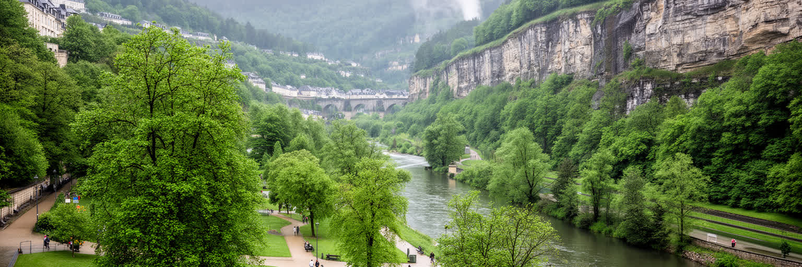
ルクセンブルク市は金融とEU機関の都市であると同時に、谷の緑が強く残る首都である。アルゼット川とペトリュス川の谷、公園、森、農地の余白は、市域の小ささに対して豊かな自然の近さを生む。海洋性気候のため雨が多く、冬は冷え込み、夏は比較的穏やかだが、近年は熱波、強い雨、洪水、斜面の管理、都市のヒートアイランドへの備えが重要になっている。谷底の緑地は散歩や自転車、昼休み、観光の場であるだけでなく、排水、冷却、生物多様性、景観保全の役割を持つ。高台にオフィスと住宅が増えるほど、緑の連続性を守ることは都市の健康に直結する。気候政策は国全体のエネルギー転換だけでなく、建物の断熱、公共交通、歩道の日陰、雨水管理、都市農地の保全として市民の生活に現れる。豊かな国の首都でも、暑さや豪雨の影響は高齢者、低所得世帯、屋外労働者に強く出る。緑の谷を美しい眺めとしてだけでなく、生活を守るインフラとして扱えるかが、これからの都市の質を決める。ルクセンブルク市の風景は、石の要塞と柔らかな緑が一緒にあるからこそ、制度都市でありながら息のつける場所になっている。谷は開発の余地ではなく、都市の安全弁でもある。雨を受け、熱を逃がし、人が歩いて頭を冷やせる空間が近くにあることは、高密度な国際首都にとって大きな資産である。緑の近さは日々の福祉でもある。
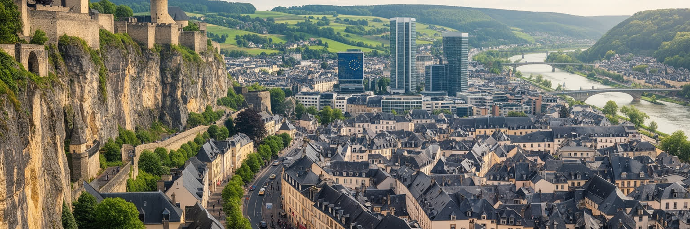
ルクセンブルク市を読む面白さは、規模の小ささと機能の大きさが常にずれている点にある。人口は大都市ほど多くないが、EU司法、会計、投資銀行、国際金融、三言語行政、越境労働、世界遺産観光が一つの首都に重なる。旧市街の石畳を歩くと中世要塞の記憶が見え、キルヒベルクへ行くと欧州制度と金融の現在が現れる。谷底の静けさは、朝夕の国境通勤や高い住宅費という緊張を隠さない。豊かさは公共サービスと安全を支えるが、生活費、住まい、言語、社会参加の壁も生む。ルクセンブルク市は、欧州統合の成功を象徴する一方、小国がグローバル金融に依存する責任、労働を周辺地域に頼る現実、多文化社会を制度で支える難しさを映す。観光客にとっては美しい旧市街かもしれないが、住民にとっては保育、通勤、家賃、言語、仕事、緑地をどう組み合わせるかが日常の課題である。だからこの都市は、派手な規模で競う世界都市ではない。短い距離を歩くだけで、要塞国家から欧州制度都市へ変わった歴史と、豊かな現代都市が抱える社会的な問いを読み取れる場所である。小ささは弱さではなく、矛盾を近くで見せる装置になっている。欧州の理想、金融の現実、住民の生活が数本の橋でつながるため、抽象的な問題が具体的な坂道や家賃や通勤列車として見える。それがこの首都の読み応えである。